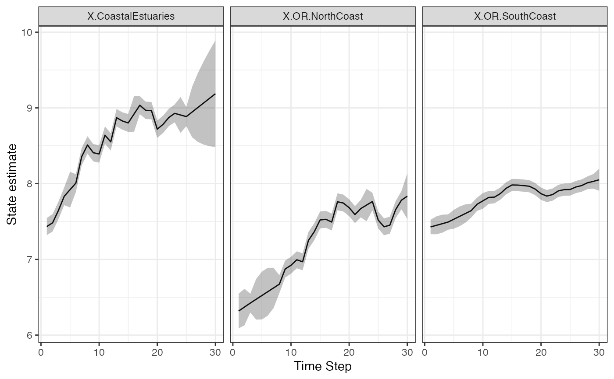
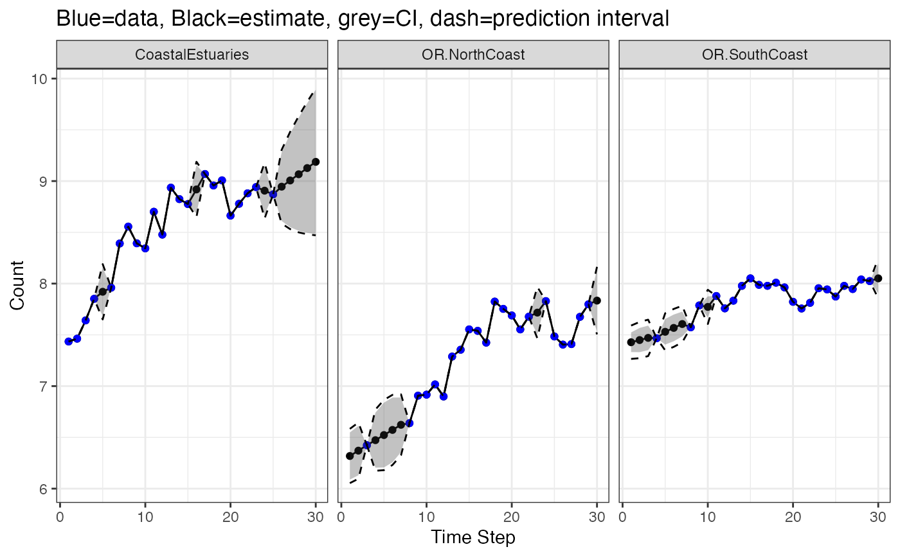
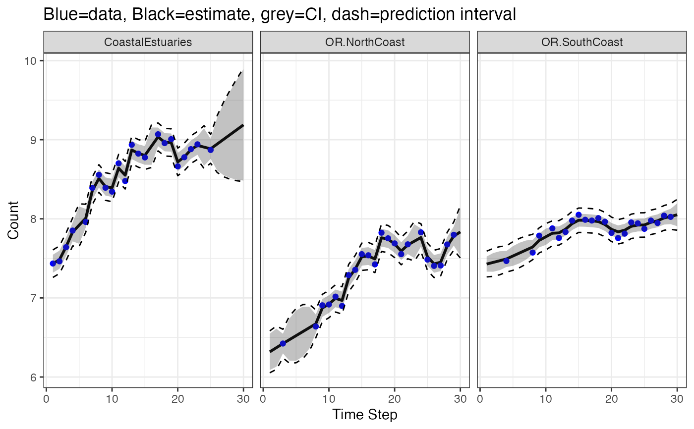

Smoothed and filtered x and y time series
tsSmooth_marssMLE.RdtsSmooth.marssMLE returns the estimated state and observations conditioned on the data. This function will return either the smoothed values (conditioned on all the data) or the filtered values (conditioned on data 1 to \(t\) or \(t-1\)). This is output from the Kalman filter and smoother MARSSkf() for the \(\mathbf{x}\) and from the corresponding function MARSShatyt() for the \(\mathbf{y}\).
These are the expected value of the full right side of the MARSS equations with the error terms (expected value of \(\mathbf{X}_t\) and \(\mathbf{Y}_t\)). Conditioning on data \(t=1\) to \(t-1\) (one-step ahead), \(t\) (contemporaneous), or \(T\) (smoothed) is provided. This is in contrast to fitted() which returns the expected value of the right side without the error term, aka model predictions.
In the state-space literature, the \(\mathbf{y}\) "estimates" would normally refer to the expected value of the right-side of the \(\mathbf{y}\) equation without the error term (i.e. the expected value of \(\mathbf{Z} \mathbf{X}_t + \mathbf{a} + \mathbf{D}\mathbf{d}_t\)). That is provided in fitted(). tsSmooth.marssMLE() provides the expected value with the error terms conditioned on the data from 1 to \(t-1\), \(t\), or \(T\). These estimates are used to estimate missing values in the data. If \(\mathbf{y}\) is multivariate, some \(y\) are missing at time \(t\) and some not, and \(\mathbf{R}\) is non-diagonal, then the expected value of \(\mathbf{Y}_t\) from the right-side of the \(\mathbf{y}\) without the error terms would be incorrect because it would not take into account the information in the observed data at time \(t\) on the missing data at time \(t\) (except as it influences \(\mathrm{E}[\mathbf{x}_t]\)).
Note, if there are no missing values, the expected value of \(\mathbf{Y}_t\) (with error terms) conditioned on the data from 1 to \(t\) or \(T\) is simply \(\mathbf{y}_t\). The expectation is only useful when there are missing values for which an estimate is needed. The expectation of the \(\mathbf{Y}\) with the error terms is used in the EM algorithm for the general missing values case and the base function is MARSShatyt().
Arguments
- object
A
marssMLEobject.- type
Type of estimates to return. Smoothed states (
xtT), one-step-ahead states (xtt1), contemporaneous states (xtt), the modelytT(Z xtT + A + D d(t)), the modelytt(Z xtt + A + D d(t)), the modelytt1(Z xtt1 + A + D d(t)), the expected value of \(\mathbf{Y}_t\) conditioned on data 1 to \(t-1\) (ytt1), the expected value of \(\mathbf{Y}_t\) conditioned on data 1 to \(t\) (ytt), or the expected value of \(\mathbf{Y}_t\) conditioned on data 1 to \(T\) (ytT). See details.- interval
If
interval="confidence", then the standard error and confidence intervals are returned. There are no prediction intervals for estimated states and observations except forytT(which is a unusual case.) If you are looking for prediction intervals, then you wantfitted()orpredict().- level
Confidence level. alpha=1-level
- fun.kf
By default,
tsSmooth()will use the Kalman filter/smoother function inobject$fun.kf(eitherMARSSkfas()orMARSSkfss()). You can pass infun.kfto force a particular Kalman filter/smoother function to be used.- ...
Optional arguments. If form="dfa",
rotate=TRUEcan be passed in to rotate the trends (only trends not the \(\mathbf{Z}\) matrix).
Value
A data frame with the following columns is returned. Values computed from the model are prefaced with ".".
If interval="none", the following are returned:
- .rownames
Names of the data or states.
- t
Time step.
- y
The data if
typeis"ytT","ytt"or"ytt1".- .estimate
The estimated values. See details.
If interval = "confidence", the following are also returned:
- .se
Standard errors of the estimates.
- .conf.low
Lower confidence level at
alpha = 1-level. The interval is approximated using qnorm(alpha/2)*se + estimate- .conf.up
Upper confidence level. The interval is approximated using qnorm(1-alpha/2)*se + estimate
If interval = "prediction", the following are also returned:
- .sd
Standard deviation of new \(\mathbf{y}_t\) values.
- .lwr
Lower range at
alpha = 1-level. The interval is approximated using qnorm(alpha/2)*sd + estimate- .upr
Upper range at
level. The interval is approximated using qnorm(1-alpha/2)*sd + estimate
Details
Below, X and Y refers to the random variable and x and y refer to a specific realization from this random variable.
state estimates (x)
For type="xtT", tsSmooth.marssMLE returns the confidence intervals of the state at time \(t\) conditioned on the data from 1 to \(T\) using the estimated model parameters as true values. These are the standard intervals that are shown for the estimated states in state-space models. For example see, Shumway and Stoffer (2000), edition 4, Figure 6.4. As such, this is probably what you are looking for if you want to put intervals on the estimated states (the \(\mathbf{x}\)). However, these intervals do not include parameter uncertainty. If you want state residuals (for residuals analysis), use MARSSresiduals() or residuals().
Quantiles The state \(\mathbf{X}_t\) in a MARSS model has a conditional multivariate normal distribution, that can be computed from the model parameters and data. In Holmes (2012, Equation 11) notation, its expected value conditioned on all the observed data and the model parameters \(\Theta\) is denoted \(\tilde{\mathbf{x}}_t\) or equivalently \(\mathbf{x}_t^T\) (where the $T$ superscript is not a power but the upper extent of the time conditioning). In MARSSkf, this is xtT[,t]. The variance of \(\mathbf{X}_t\) conditioned on all the observed data and \(\Theta\) is \(\tilde{\mathbf{V}}_t\) (VtT[,,t]). Note that VtT[,,t] != B VtT[,,t-1] t(B) + Q, which you might think by looking at the MARSS equations. That is because the variance of \(\mathbf{W}_t\) conditioned on the data (past, current and FUTURE) is not equal to \(\mathbf{Q}\) (\(\mathbf{Q}\) is the unconditional variance).
\(\mathbf{x}_t^T\) (xtT[,t]) is an estimate of \(\mathbf{x}_t\) and the standard error of that estimate is given by \(\mathbf{V}_t^T\) (VtT[,,t]). Let se.xt denote the sqrt of the diagonal of VtT. The equation for the \(\alpha/2\) confidence interval is (qnorm(alpha/2)*se.xt + xtT). \(\mathbf{x}_t\) is multivariate and this interval is for one of the \(x\)'s in isolation. You could compute the m-dimensional confidence region for the multivariate \(\mathbf{x}_t\), also, but tsSmooth.marssMLE returns the univariate confidence intervals.
The variance VtT gives information on the uncertainty of the true location of \(\mathbf{x}_t\) conditioned on the observed data. As more data are collected (or added to the analysis), this variance will shrink since the data, especially data at time \(t\), increases the information about the locations of \(\mathbf{x}_t\). This does not affect the estimation of the model parameters, those are fixed (we are assuming), but rather our information about the states at time \(t\).
If you have a DFA model (form='dfa'), you can pass in rotate=TRUE to return the rotated trends. If you want the rotated loadings, you will need to compute those yourself:
dfa <- MARSS(t(harborSealWA[,-1]), model=list(m=2), form="dfa")
Z.est <- coef(dfa, type="matrix")$Z
H.inv <- varimax(coef(dfa, type="matrix")$Z)$rotmat
Z.rot <- Z.est %*% H.invFor type="xtt" and type=="xtt1", the calculations and interpretations of the intervals are the same but the conditioning is for data \(t=1\) to \(t\) or \(t=1\) to \(t-1\).
observation estimates (y)
For type="ytT", this returns the expected value and standard error of \(\mathbf{Y}_t\) (left-hand side of the \(\mathbf{y}\) equation) conditioned on \(\mathbf{Y}_t=y_t\). If you have no missing data, this just returns your data set. But you have missing data, this what you want in order to estimate the values of missing data in your data set. The expected value of \(\mathbf{Y}_t|\mathbf{Y}=\mathbf{y}(1:T)\) is in ytT in MARSShatyt() output and the variance is OtT-tcrossprod(ytT) from the MARSShatyt() output.
The intervals reported by tsSmooth.marssMLE for the missing values take into account all the information in the data, specifically the correlation with other data at time \(t\) if \(\mathbf{R}\) is not diagonal. This is what you want to use for interpolating missing data. You do not want to use predict.marssMLE() as those predictions are for entirely new data sets and thus will ignore relevant information if \(\mathbf{y}_t\) is multivariate, not all \(\mathbf{y}_t\) are missing, and the \(\mathbf{R}\) matrix is not diagonal.
The standard error and confidence interval for the expected value of the missing data along with the standard deviation and prediction interval for the missing data are reported. The former uses the variance of \(\textrm{E}[\mathbf{Y}_t]\) conditioned on the data while the latter uses variance of \(\mathbf{Y}_t\) conditioned on the data. MARSShatyt() returns these variances and expected values. See Holmes (2012) for a discussion of the derivation of expectation and variance of \(\mathbf{Y}_t\) conditioned on the observed data (in the section 'Computing the expectations in the update equations').
For type="ytt", only the estimates are provided. MARSShatyt() does not return the necessary variances matrices for the standard errors for this cases.
References
R. H. Shumway and D. S. Stoffer (2000). Time series analysis and its applications. Edition 4. Springer-Verlag, New York.
Holmes, E. E. (2012). Derivation of the EM algorithm for constrained and unconstrained multivariate autoregressive state-space (MARSS) models. Technical Report. arXiv:1302.3919 [stat.ME]
Examples
dat <- t(harborSeal)
dat <- dat[c(2, 11, 12), ]
fit <- MARSS(dat)
#> Success! abstol and log-log tests passed at 55 iterations.
#> Alert: conv.test.slope.tol is 0.5.
#> Test with smaller values (<0.1) to ensure convergence.
#>
#> MARSS fit is
#> Estimation method: kem
#> Convergence test: conv.test.slope.tol = 0.5, abstol = 0.001
#> Estimation converged in 55 iterations.
#> Log-likelihood: 30.86888
#> AIC: -41.73776 AICc: -37.73776
#>
#> Estimate
#> R.diag 0.00450
#> U.X.CoastalEstuaries 0.06050
#> U.X.OR.NorthCoast 0.05227
#> U.X.OR.SouthCoast 0.02148
#> Q.(X.CoastalEstuaries,X.CoastalEstuaries) 0.02499
#> Q.(X.OR.NorthCoast,X.OR.NorthCoast) 0.01994
#> Q.(X.OR.SouthCoast,X.OR.SouthCoast) 0.00297
#> x0.X.CoastalEstuaries 7.37247
#> x0.X.OR.NorthCoast 6.26598
#> x0.X.OR.SouthCoast 7.40658
#> Initial states (x0) defined at t=0
#>
#> Standard errors have not been calculated.
#> Use MARSSparamCIs to compute CIs and bias estimates.
#>
# Make a plot of the estimated states
library(ggplot2)
d <- tsSmooth(fit, type = "xtT", interval="confidence")
ggplot(data = d) +
geom_line(aes(t, .estimate)) +
geom_ribbon(aes(x = t, ymin = .conf.low, ymax = .conf.up), linetype = 2, alpha = 0.3) +
facet_grid(~.rownames) +
xlab("Time Step") + ylab("State estimate")

# Make a plot of the estimates for the missing values
library(ggplot2)
d <- tsSmooth(fit, type = "ytT", interval="confidence")
d2 <- tsSmooth(fit, type = "ytT", interval="prediction")
d$.lwr <- d2$.lwr
d$.upr <- d2$.upr
ggplot(data = d) +
geom_point(aes(t, .estimate)) +
geom_line(aes(t, .estimate)) +
geom_point(aes(t, y), color = "blue", na.rm=TRUE) +
geom_ribbon(aes(x = t, ymin = .conf.low, ymax = .conf.up), alpha = 0.3) +
geom_line(aes(t, .lwr), linetype = 2) +
geom_line(aes(t, .upr), linetype = 2) +
facet_grid(~.rownames) +
xlab("Time Step") + ylab("Count") +
ggtitle("Blue=data, Black=estimate, grey=CI, dash=prediction interval")

# Contrast this with the model prediction of y(t), i.e., put a line through the points
# Intervals are for new data not the blue dots
# (which were used to fit the model so are not new)
library(ggplot2)
d <- fitted(fit, type = "ytT", interval="confidence", level=0.95)
d2 <- fitted(fit, type = "ytT", interval="prediction", level=0.95)
d$.lwr <- d2$.lwr
d$.upr <- d2$.upr
ggplot(data = d) +
geom_line(aes(t, .fitted), linewidth = 1) +
geom_point(aes(t, y), color = "blue", na.rm=TRUE) +
geom_ribbon(aes(x = t, ymin = .conf.low, ymax = .conf.up), alpha = 0.3) +
geom_line(aes(t, .lwr), linetype = 2) +
geom_line(aes(t, .upr), linetype = 2) +
facet_grid(~.rownames) +
xlab("Time Step") + ylab("Count") +
ggtitle("Blue=data, Black=estimate, grey=CI, dash=prediction interval")
